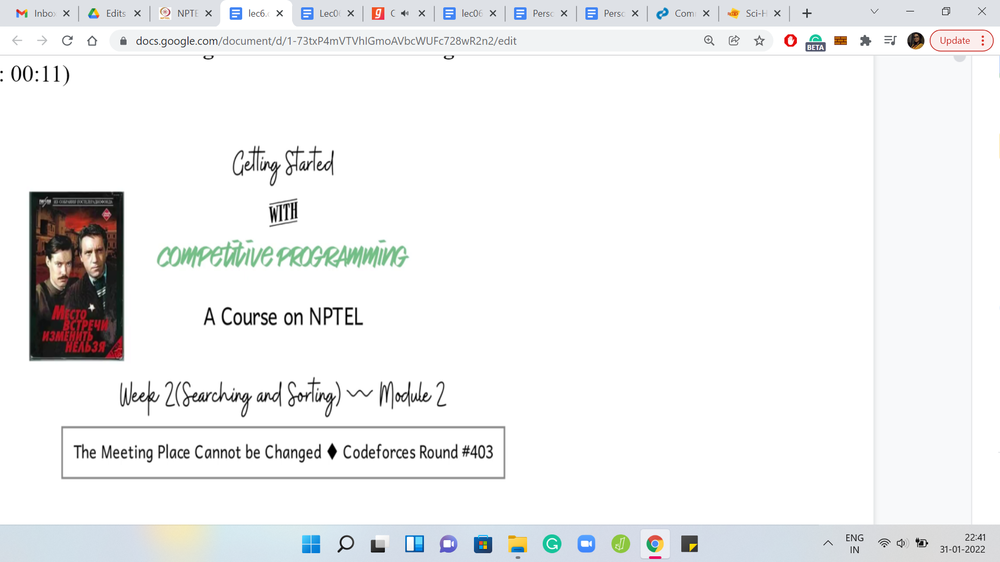
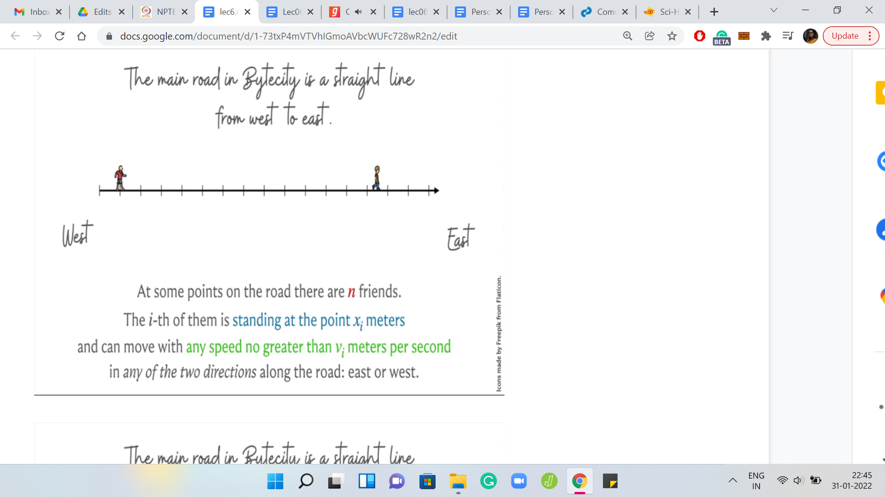
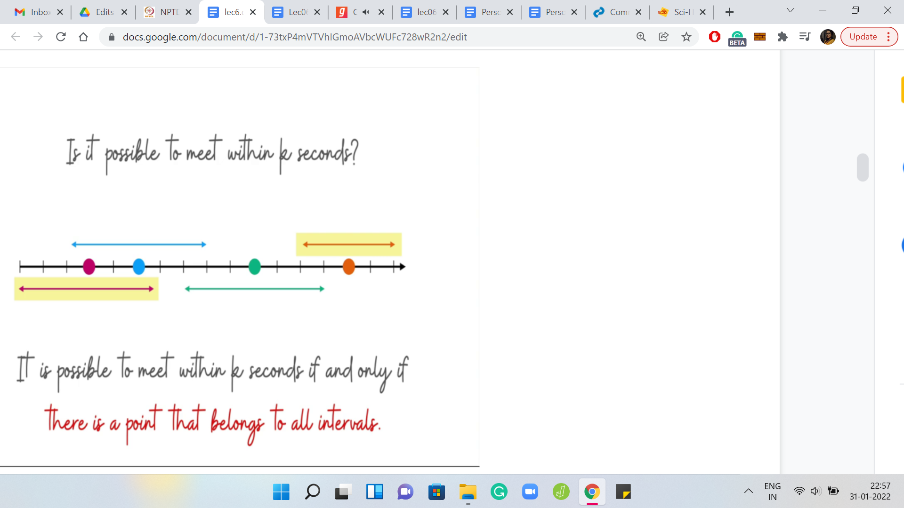
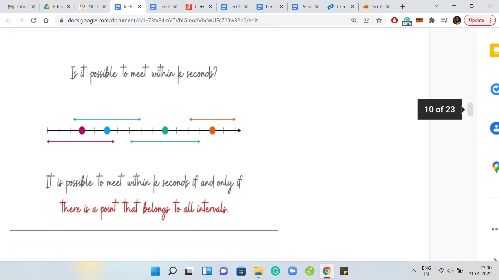
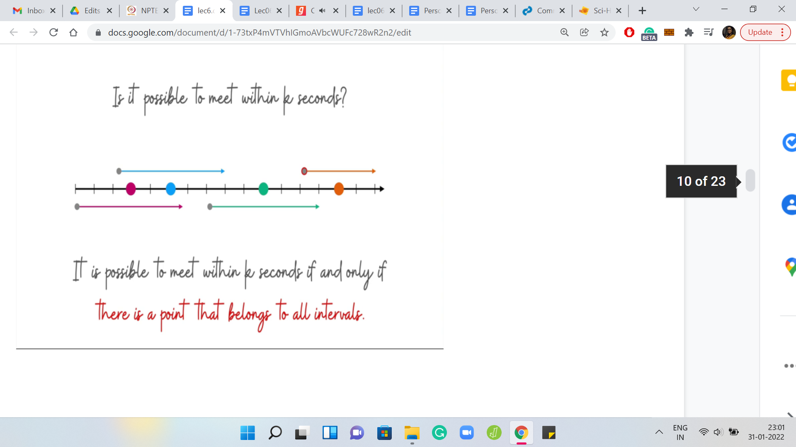
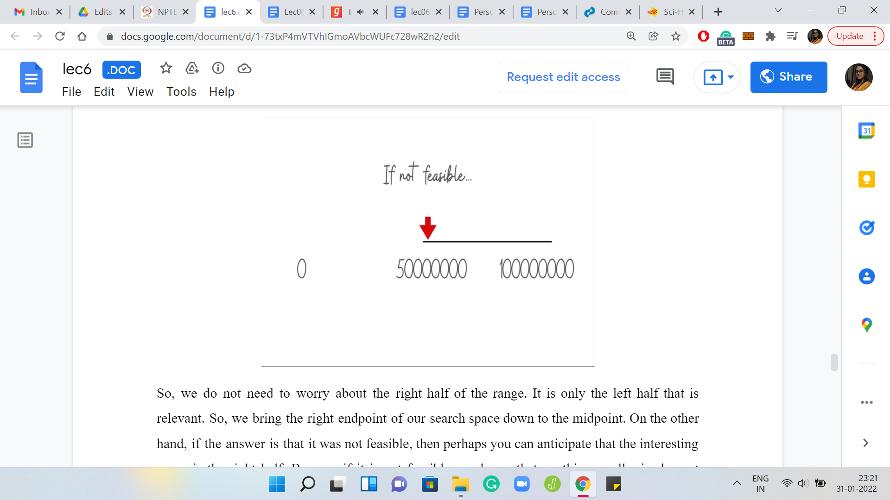
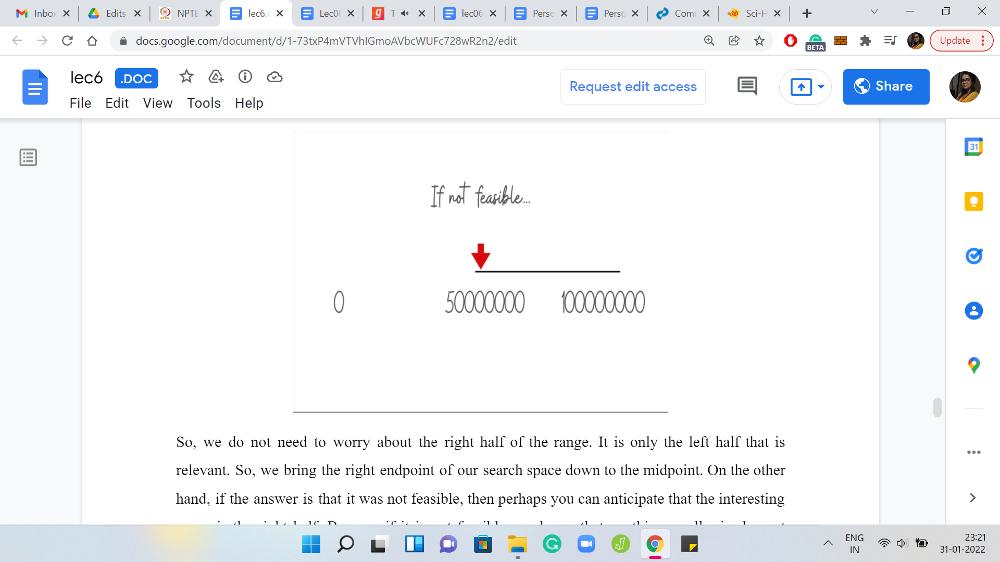

Searching and Sorting - Module 2 (The Meeting Place Cannot be
Lecture - 06
Searching and Sorting - Module 2 (The Meeting Place Cannot be Changed)
(Refer Slide Time: 00:11)

Welcome back to the second module of the second week of Getting Started with Competitive Programming. We continue our journey through problems that require some application of either sorting or searching. In this video, it is going to be searching. We will be talking about the Codeforces problem from round number 403. The problem name is, The Meeting Place Cannot Be Changed.
It turns out this is also the title of a 1979 soviet five-part television miniseries. That is information that you probably did not need to know. But that is what shows up when you do a Google search for this phrase. So, if you want to get to the Codeforces problem statement make sure to add Codeforces to your search query or just use the link in the description of this lecture video. This problem has a pretty short story. But I will say that the binary search aspect of the solution was not very obvious to me from the outset.
There are some problems wherefrom the statement you can quite easily guess that there must be some kind of a binary search involved here. But I will say that in this one, at least to me, it felt a bit hidden. It seemed like the statement was suggesting more of a greedy sort of an approach or something like that. But, of course, once you start thinking about it and you look at the problem limits, it becomes clearer and clearer that you have to do some sort of a binary search. So, let us get started by looking at the problem statement as usual.
(Refer Slide Time: 01:36)


It all starts with this road in Bytecity, which can be thought of as a straight line that goes from west to east. I should point out that this is not verbatim from the problem statement, where it is a north-south road instead. But I wanted to give myself some horizontal space on these slides. I did not also want to disorient you by calling this horizontal line a north-south road. But this detail is really not relevant to the main mechanics of the problem. So, I just wanted to flag that it is different but it does not matter. This road is demarked by integer coordinates.
What we are told is that there are ‘n’ friends who are standing on this road. In fact, we are given their exact locations as input, as we will see later. We are also told that these people can move around on the road in either direction, and each individual has a maximum speed that they can travel with. So, you have ‘n’ people standing at these ‘n’ locations, which may or may not be distinct. Each one of these people has a speed with which they can travel. They can travel either towards the east or towards the west. So, what do we want to do?
Remember the name of the problem is ‘The Meeting Place Cannot Be Changed.’ You might guess that the problem itself has something to do with getting these people to meet? Indeed, it turns out that the question we want to address is: What is the minimum time that we need for getting all of these people to meet? By asking them to move of course, if necessary. We can direct the first person, for example, to go eastward, the second person to go westward. Whatever we want them to do, we can just ask them to do it.
We want to know, what is the most optimal set of directions that we can give these people so that they come to a common point after a certain amount of time has elapsed. We want this to happen as quickly as possible. So, that is the question. Also, one thing to note is that the place where they meet is not constrained to be an integer coordinate. So they can meet anywhere on this line, as long as they get to meet. That is what is important.
(Refer Slide Time: 03:54)

Let us, maybe, work through an example. As usual, we will pick up one of these sample inputs and go over it. These distances or these coordinates are measured from the east-most building. We just think of this building as the origin. We have coordinates being given as distances from this origin. What we have is three people who are standing at locations 7, 1, and 3, and their respective speeds are 1, 2, and 1.
You can see that the speeds are color-coded according to the people who have those maximum possible speeds. At this point, maybe you want to work through this yourself. What is the smallest amount of time that you will need to get these people to meet up at a common point? Please take a pause here and try to figure this out without, hopefully, looking at the problem statement. This is a nice example to work through. It will give you some intuition for what is going on.
(Refer Slide Time: 05:11)


Hopefully, you had a chance to think through that. So, let us ask ourselves if, for example, one second is enough. So here is the scope of how much people can travel within one second based on their speeds. You can see that the green and the blue intervals are disjoint. Even if the green guy comes as much to the right as possible and the left chap moves as much to the left as possible (both of them are stretching as much as they can), it will still not be possible for them to meet.
So, we know that one second is not enough. Maybe we want to ramp this up and try to work with two seconds. Would that work? Again, if you have not completely worked through the example already, this is another chance to pause and try to figure this out.
(Refer Slide Time: 06:00)

With 2 seconds at your disposal, notice that people can move around more and you indeed have a valid meeting point at the fifth coordinate. In particular, you could ask the green point to move 2 steps to the right and the blue point to move 2 steps to the left. The pink point also moves four steps to the left, which it can in 2 seconds because this point has a maximum velocity of 2. This also tells you that anything less than two seconds will not suffice.
Even if you have 0.9999 seconds at your disposal, the green and the blue points will still fall slightly short of the meeting. This is also a good opportunity for me to point out that the answer in terms of the number of seconds also need not be an integer. We are really looking at 10-6 level of precision here.
This will become clear when we start getting to the implementation later. But for now, just keep that at the back of your mind: The number of seconds that you report need not be an integer. So, with this example fully worked out and behind us, let us now address the more general question of whether it is possible to meet within ‘k’ seconds.
(Refer slide Time: 07:09)


If I tell you that you have a budget of ‘k’ seconds and you have all this information about the starting points of all the ‘n’ friends and their respective maximum velocities, can you figure out if it is possible to get them to meet within ‘k’ seconds? Based on the way we tackled the example, you might already have some thoughts about this.
Because we know the initial locations, the maximum velocities, and how much people can move within ‘k’ seconds. We could draw these intervals around each of these points realizing that anything outside of this is not attainable within ‘k’ seconds. Based on this, can you come up with criteria for whether people can meet within ‘k’ seconds or not?
Take a moment here to think through this because this is one of the key pieces of the puzzle. There is one more coming up that has to do with the theme of this lecture which is binary searching. But we will get to that in just a few minutes. For now, just think about how will you figure out if ‘k’ seconds are enough for people to meet? I guess it is reasonably clear, at least, visually that it is possible for everybody to meet within ‘k’ seconds, if and only if there is a point that belongs to all of these intervals that we have drawn here.
In particular for this example, notice that it is not possible for everybody to meet because, for instance, the pink point and the orange point are always going to be divorced from each other. They are never going to come to a commonplace, at least within this time, assuming that these intervals are an accurate representation of how much they can move based on their velocities.
(Refer Slide Time: 08:58)




On the other hand, let us look at an example where things do work out. Notice that there is at least one point, in fact, there is an entire range, which could be used as a meeting place because the points on that range are accessible to all people involved here. That brings up the natural question of how can we figure out if a collection of intervals has a common point or not?
This is again, a cute question. If you have a collection of intervals given by the left and right endpoints, what would be an algorithm to figure out if there is a point on the line, which is contained in all of these intervals? Again, just take a moment here to think through this and see if you can work it out. Come back once you are ready. Hopefully, you had a chance to think about this. Let us go back to the example from before.
Here, let me highlight all the left endpoints of all the intervals. One of these is special, the one that is special is encircled in red. Among all the left-end points, it is the rightmost one. Let us also highlight all the right endpoints. The one that I am interested in is the left most of them. The two encircled points are the left most of the right endpoints and the right most of the left endpoints.
The criteria for all the intervals to overlap is simply the following. What we want is for the right most of the left endpoints to come before the left most of the right endpoints. If this happens, then you know that essentially everybody meets within this range that is defined by these two points. But if these two points are separated then things do not quite work out. Let us also see an example of when things do work out.
For instance, you can see that the rightmost of the left endpoints come first and the leftmost of the right endpoints comes afterward. This works out nicely. You can see that there is a substantial range of potential meeting points in this example. Now, this is a statement that you can actually prove formally.
(Refer Slide Time: 11:19)

Let me write out the criteria here. So, if the maximum of the Li is at most the minimum of the Ri, then you do have a meeting point. In fact, every point in this range, max Li, min Ri will actually give you a valid meeting point. The reason for this is: Well, suppose that there was one interval that was outside of this range. It did not intersect this range. Then depending on whether the interval was to the right of this range or entirely to the left of this range, you can argue that either its right or left endpoint will contradict our definition of the choices of min and max.
This is a really simple two-line proof. I would encourage you to write it out if you are not completely convinced. The other side of the argument is that if this does not work out. In particular, if the max of Li is greater than the min of Ri. Then if you just look at those two intervals, the ones that witness this max and min, you will see that those two intervals themselves are disjoint. There is no hope for these two intervals to intersect.
Therefore, it is certainly true that all of the intervals do not have a common point on which they overlap. So, these are the criteria that help us determine if ‘k’ seconds are enough or not for everybody to meet. But notice that our actual task is to find the smallest ‘k’ for which a meeting is feasible. How do we go about that? This is where the binary search comes in.
(Refer slide Time: 13:02)

Once again, let us go back to this question here. We know how to address this question, given k, and all the xi‘s and the Vi’s. We know how to figure out whether ’k’ is enough or not. Hopefully, it is clear by now that the xi’s are the locations and the Vi’s are the max velocities. So, we know how to figure this out. But notice the following two things.
First of all, if the answer to this question turns out to be ‘no.’ So ‘k’ seconds are not enough, then certainly anything less than ‘k’ is also not enough because already with ‘k’ you are not able to meet. If you have even less than ‘k’ seconds at your hands, then you are even more constrained. Of course, it is not going to work out because if it worked out with less than ‘k,’ then it is going to work out with ‘k’ as well. Hopefully, it is clear that if the answer to this question is ‘no’ for some ‘k,’ then it is also no for every value that is less than ‘k.’
Similarly, if the answer to this question is ‘yes,’ then the answer is yes for all values that are bigger than ‘k.’ So, that means that if, let us say, five seconds was enough then, six seconds are also enough and seven seconds are enough and so on. Once you have a ‘k’ that is feasible, the interesting question is, can we do it with a smaller ‘k?’
That is what we want to figure out. And if you have a ‘k’ that is infeasible, then the question you ask yourself is, ‘k’ was not enough so we probably need to give ourselves a little more budget, a little more wiggle room. That motivates a very natural binary search over the range of all possible ‘k.’
(Refer Slide Time: 14:43)


Based on the limits of the problem statement, let us work with the range 0 to some large number. I think something like 109 or so should suffice. With this range we are binary searching. We start in the middle, and we ask ourselves is 50 how many ever seconds enough? Suppose the answer turns out to be ‘yes,’ that this is enough. Then what should we do? We want to throw away half of this range, which half should we throw away?
Just think about that for a second. Pause the video and take a moment here to think through this because this is the crux of the binary search part of the algorithm. Hopefully, you had a chance to commit to an answer. So, if these many seconds are enough, then we need to challenge ourselves to see if we can do it with even fewer seconds.
(Refer slide Time: 16:03)
 

We do not need to worry about the right half of the range. It is only the left half that is relevant. We bring the right endpoint of our search space down to the midpoint. On the other hand, if the answer is that it was not feasible, then perhaps you can anticipate that the interesting range is the right half because if it is not feasible, we know that anything smaller is also not going to be feasible. So, there is no point in checking for those numbers.
So, we search in the right half. In other words, the way we truncate our search space is by bringing the left endpoint to the middle. That is kind of how you would do it in the program. That completes the overall description of the algorithm. You binary search over all possible values that the number of seconds could take, which is the answer. Every time you pose a question ‘is so many seconds enough?’, you use the interval intersecting business that we discussed a few minutes ago to figure out whether the answer to the question is ‘yes’ or ‘no.’
Every time you have an answer, you know which way to proceed. Hopefully, by now you have enough information to try and implement this algorithm yourself. Please go ahead and give it a shot. Do keep in mind that the numbers can be big. And the answer is required to be within a 1 over 106 error bound. It is possible that the judge has a particular answer and you have a slightly different one because you are dealing with floating points. Some calculations may not be exact. But you want the absolute difference between the answer of the judge and your answer to be within 10 to the minus 6. So, just make sure that you are using enough precision as you go along. In particular, we are binary searching. So, one way to think of the binary search criteria is when have you narrowed in enough to say that you know the answer?
Remember, back when we were talking about the problem definition. We said that the output, which is the number of seconds, need not be an integer. You certainly cannot just stop when you have a pair of consecutive integers, one of which reports ‘yes’ and the other reports ‘no.’ Then you just report the one that said ‘yes.’ That is not enough. You have to dig deeper into the gap between these two consecutive integers. For instance, suppose you say that one second is not enough, but two seconds is enough, you still have to probe the possibility that maybe 1.5 seconds are enough.
If the answer to that is ‘yes,’ then you have to continue your search between 1 and 1.5. When do you decide to give up because these are not integers? What are the stopping criteria going to be? You have to decide when you have two numbers that are close enough for you to take a call.
You keep the search going for as long as the two numbers that you are working with are sufficiently far apart. Since you are looking at a 10-6 kind of precision, you can say that if the numbers are closer than that then this is a good enough approximation of the final answer. That is how we will be implementing it.
I think that is the spirit in which most of the implementations would be for this problem. Please go ahead, give it a shot and come back to exchange notes. As usual, I will spend a few minutes going through my implementation for this. For this problem, the implementation that I will show you is in Python. By now, we also have an announcement, which is on the mailing list as well as in Discord, where we have shared with you a link to a Google Form, requesting translations of the sample answers in other languages.
For instance, for this problem, the GitHub repository will already have the Python code. But it will be great if you have C++, C, or Java versions of the same code, as long as you follow a similar format and document your code well.
If your code passes all the test cases, then please do share it with us so that we can add it to the repository with full credit. Make sure you add your name and anything else that you want to add about yourself in the comments. We will be very happy to share this with the rest of the class. Thank you in advance for your contribution to making this course better.
(Refer Slide Time: 20:32)


Let us move on to the implementation here. The first few lines here are, again, accepting the input. The input is always just three lines. The first line is the number of people. The next line is a space-separated list of integers, which talks about the locations. The last line is a space-separated list of integers, which talks about the velocities. You read them in and I have used very short variable names here. But they are still descriptive. So, x for the x[i]s, and v for the v[i]s.
Let us move along. Here are the criteria for determining if ‘k’ seconds are enough. We have three very short functions. The first one identifies the right-most left endpoint. Remember, the left-hand points are given by the offset from the original location towards the left for how much you can travel in ‘t’ seconds. You say x[i]-v[i]*t. I think that is reasonably natural and easy to understand. On the other hand, we have how much can you move to the right.
That is x[i]+v[i]*t. That is an array that collects the right endpoints. The second function is simply returning the leftmost of the right endpoints. Remember, this was the max of Li, min of Ri expression that we had seen a couple of minutes ago. The ‘is feasible’ function takes a number ‘k,’ which represents the number of seconds that you have on your budget. It tries to figure it out by comparing the left-most right endpoint and the right-most left endpoint, whether this is workable or not.
Notice that the two functions above take ‘t’ as a parameter, which is the number of seconds that you have and that is what we are passing to them when we are writing the ‘is feasible’ function. This, hopefully, is quite closely representative of what we had discussed a few minutes ago.
(Refer Slide Time: 22:47)

The only thing left to do now is the actual binary search. We initialize our range. Remember, you could need as little as 0 seconds in case everyone is already in the same position, to begin with. I think if you study the limits, you will see that you will never need more than 109. So, that is what we have here for left and right. As we discussed, we are going to keep searching for as long as the search range has not become tiny. As long as R-L is bigger than a really small number, we are going to continue our search.
I think we always maintain the invariant that R is at least L. The absolute value here is not really necessary. But it is there anyway, so, it does not hurt, but I think it is not required. That is the criteria for whether you want to keep searching or not. As long as R and L are sufficiently separated, you keep going. What do you do when you are binary searching?
Of course, the first step is to find the midpoint of your current search range (the value of mid). Based on whether the current mid is feasible or not, you decide to truncate your search interval one way or the other. Remember, we said that if the answer is ‘yes’ (feasible), then we ignore everything, every number that is larger. We want to challenge ourselves to find a smaller number. So, we bring R down to mid.
On the other hand, if it is ‘no’ (not feasible), we know that what we have is not enough, so we need to go higher. So, we ignore everything that is smaller. The way to do that is to bring the left-hand point all the way up to the midpoint. That is how we reset the values of L and R. You just keep going until you have a search range that is sufficiently tiny. At that point, you can exit the loop and print the answer. This is, I think, fairly clean and in some sense, also a little bit clever.
At least this solution was not completely obvious to me. I think the part about the intervals is pretty natural to do but from there, you start thinking about whether you want to do something that is greedy or something else. But the final solution that does happen to work, I think is really cute. I hope you enjoyed this as much as I did. So, we call it a wrap here and we will see another problem in the next video as usual. So, I will see you there. In the meantime, thanks for watching!